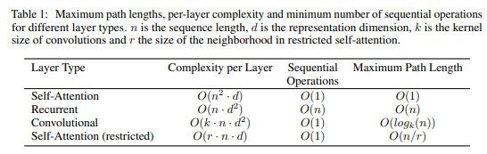

In this section we compare various aspects of self-attention layers to the recurrent and convolutional layers commonly used for mapping one variable-length sequence of symbol representations (x1, ..., xn) to another sequence of equal length (z1, ..., zn), with xi , zi ∈ R d , such as a hidden layer in a typical sequence transduction encoder or decoder. Motivating our use of self-attention we consider three desiderata.
One is the total computational complexity per layer. Another is the amount of computation that can be parallelized, as measured by the minimum number of sequential operations required.
[info]
翻译：一种是每层的总计算复杂度。 另一个是可以并行化的计算量，以所需的最少顺序操作数衡量。
The third is the path length between long-range dependencies in the network.
[info]
翻译：第三个是网络中远程依赖关系之间的路径长度。
Learning long-range dependencies is a key challenge in many sequence transduction tasks. One key factor affecting the ability to learn such dependencies is the length of the paths forward and backward signals have to traverse in the network. The shorter these paths between any combination of positions in the input and output sequences, the easier it is to learn long-range dependencies [12]. Hence we also compare the maximum path length between any two input and output positions in networks composed of the different layer types.

As noted in Table 1, a self-attention layer connects all positions with a constant number of sequentially executed operations, whereas a recurrent layer requires O(n) sequential operations. In terms of computational complexity, self-attention layers are faster than recurrent layers when the sequence length n is smaller than the representation dimensionality d, which is most often the case with sentence representations used by state-of-the-art models in machine translations, such as word-piece [38] and byte-pair [31] representations.
[info]
word-piece)
byte-pair
To improve computational performance for tasks involving very long sequences, self-attention could be restricted to considering only a neighborhood of size r in the input sequence centered around the respective output position. This would increase the maximum path length to O(n/r). We plan to investigate this approach further in future work.
A single convolutional layer with kernel width k < n does not connect all pairs of input and output positions. Doing so requires a stack of O(n/k) convolutional layers in the case of contiguous kernels, or O(logk(n)) in the case of dilated convolutions [18], increasing the length of the longest paths between any two positions in the network.
[info]
dilated convolutions
Convolutional layers are generally more expensive than recurrent layers, by a factor of k. Separable convolutions [6], however, decrease the complexity considerably, to O(k · n · d + n · d 2 ). Even with k = n, however, the complexity of a separable convolution is equal to the combination of a self-attention layer and a point-wise feed-forward layer, the approach we take in our model.
As side benefit, self-attention could yield more interpretable models. We inspect attention distributions from our models and present and discuss examples in the appendix. Not only do individual attention heads clearly learn to perform different tasks, many appear to exhibit behavior related to the syntactic and semantic structure of the sentences.
[success]
Self-attention、CNN、RNN分别用各自的方法，将的矩阵映射成的矩阵。其中m是不定值，n和d是定值。
例如在Transformer的encoder和decoder应用场景中，将不确定个数的序列历史向量映射成确定个数的hidden state向量。
本文从三个角度对比self-attention、CNN、RNN：
（1）计算复杂性
（2）可并行化的计算量，即所需的最少并行操作数
（3）远程依赖关系之间的路径长度
[?] 这三个指标具体到底怎么算出来的？